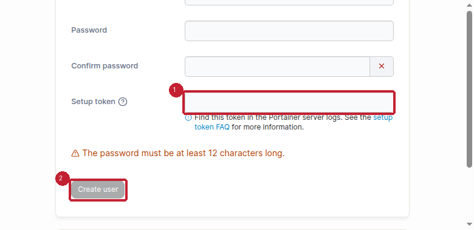

범용 연출 코어
- narrative_mode / addressee
- story_function / shot_size / composition_type
- camera 4요소 / angle / focus
- action_phase / transition_type
- state_out → state_in
- 목적별 duration / 연출 QC
n8n·재시도·모델/작품 규칙 분리
특정 서비스 이름과 특정 작품 스타일을 한 프롬프트에 하드코딩하지 않습니다. 아래 세 층이면 어떤 장르·모델에도 재사용할 수 있습니다.
scene_id
narrative_mode · addressee · story_function
identity_sheet_profile · identity_lock
subject_action · scene_environment · visual_style
shot_size · composition_type · camera_angle
camera_movement · camera_speed · camera_framing_lock · camera_end_state
action_phase · transition_type · duration_seconds
previous_state_out · current_state_in · continuity_handoff
tts_master · audio_lipsync · negative_prompt
directing_qc · av_qc · cost_qc · verdict대본·이미지·음성·영상·편집 단계가 같은 장면 ID와 상태를 사용하도록 연결합니다.
| 단계 | 입력 → 출력 | 다음 단계 조건 |
|---|---|---|
| 1 대본 | 대본 버전 → 장면 ID·대사 ID·의도·발화자·연기 모드 | 말과 행동의 대상이 분명함 |
| 2 이미지 | 캐릭터·장소·소품 정본 → 승인 시작 이미지 | 정체성·구도·손·공간 검사 |
| 3 음성 | 일본어 원문·승인 화자 → WAV·실측 시간·한국어 편집표 | 대사·화자·길이 일치 |
| 4 견적 | 현재 계정·정확한 모델/모드·해상도·길이·입력 → 견적 | free-only면 discountCost=0 + activityMode=unlimited 확인 |
| 5 생성 | 승인 입력 → 작업 ID → 상태 조회 → 다운로드 | 같은 장면 재제출 방지 키와 완료 영수증 |
| 6 립싱크·체인 | 최종 WAV·영상 → 입 검수·끝 프레임·해시 | 필요 립싱크 완료, 연속 체인 상태 일치 |
| 7 편집 | 승인 클립·컷 표 → 타임라인·검수본·최종본 | A/V·자막·연출 QC 통과 |
| 8 전달 | 최종본·편집표·명세 → ZIP·완료 기록 | 파일 수·중복·해시 검증, 완료 큐 종료 |
기존 방법을 유지하면서 필요한 모듈을 추가합니다.
이 표는 기존 제작 지침의 로컬 메뉴와 검증 범위만 보완합니다. 127.0.0.1 바로 열기는 서비스가 돌아가는 Ubuntu PC에서만 동작합니다. 모바일에서는 이 문서를 읽거나 프롬프트를 복사할 수 있지만 PC 로컬 서비스를 열 수 없습니다.
| 메뉴 | 이동 → 클릭 → 입력 → 실행 → 정상 결과 | 실제 확인·상태 | 바로 열기 |
|---|---|---|---|
| n8n 조사·Radar | Chrome → n8n 실습 → 소유자 설정 → Overview → Workflows → OFFLINE DEMO - Radar low view cases → Editor → Execute workflow → 마지막 노드 Output. 실습에는 API 키나 시트 입력이 없다. 실제 수집 #03은 운영 승인 후 MANUAL_RESEARCH의 ACTIVE 행에 keyword / region / date_lookback / maxResults를 입력한다. #04는 예약 수집이다.복사 지시문 보기[주제]의 현지어 검색어를 작성하고 keyword, region, date_lookback, maxResults로 반환하라. RAW CSV가 없으면 조회수를 만들지 마라. 낮은 조회수도 남기고 관측 수치와 추정치를 구분하라. | 실습 주소 HTTP 200, Docker CLI 샘플 3행 성공. 실제 RAW에는 단순 최소 조회수 컷이 없고 #06의 저장 조건은 라벨 >50과 달리 VIDEO_SCORE ≥ 1. 실제 API·시트는 실행 안 함. | n8n 실습 열기 |
| 번역·대본 | 수집 결과에서 출처·사용 범위·원문을 확정 → 검수된 번역을 준비 → 대본·연기 메뉴. 운영 n8n에서는 #71 Webhook - Transcreate / Ollama 및 DAEBON의 CONTENT_MASTER가 별도 단계다.복사 지시문 보기원문·출처·구간을 보존해 한국어 직역과 내레이션용 번역을 분리하고 승인 자료만 써서 scene_id, narration, source_ids를 만들어라. 사실과 내 해설을 구분하라. | 가이드 메뉴 정상; n8n 실습 안에는 번역/대본 노드 없음. 운영 자동 연결·비용 발생 호출 미검증. | 대본·연기 열기 |
| 이미지·ComfyUI | 승인된 ComfyUI가 가동된 뒤 기존 이미지 그래프 → 텍스트 입력 노드 → Run → 미리보기 또는 PNG. Run은 서버 시작 버튼이 아니다.복사 지시문 보기[장면 ID]의 피사체·장소·구도·광원·행동을 한 문단에 정리하라. 자막 공간을 남기고 보도 화면으로 오인할 로고·문구를 넣지 마라. | 중지/미접속: 이 PC의 8188·8199 응답 없음. 동작하지 않는 localhost 링크 대신 기존 이미지 메뉴 연결. | 이미지 절차 열기 |
| 영상·합성 | 영상 생성기에서 승인된 장면 입력 → MP4 저장 → 기존 영상/VFX 메뉴. R48/R50과 FFmpeg는 생성이 아니라 합성/병합이다.복사 지시문 보기[입력 이미지]의 피사체와 구도를 유지하고 카메라 움직임 한 가지를 지정하라. 새 인물·글자를 넣지 말고 생성 장면을 재현으로 구분하라. | 기존 R48/R50 격리 테스트만 확인. H3/ComfyUI는 현재 열리는 생성 주소 미확인. 새 생성 없음. | 영상·VFX 절차 열기 |
| 한국어 TTS | 승인된 Qwen3-TTS 데모가 실행된 뒤 Text → Korean → Sohee → Generate → Output Audio. WAV를 먼저 시청·검수하고 클립과 동일 scene_id로 저장한다.복사 지시문 보기확정 대본 내용을 바꾸지 말고 발음·휴지를 별도 필드로 표시하라. 장면별 spoken_text와 사람이 직접 녹음할 문장을 분리하라. | 8000 응답 없음. 기존 WAV는 확인했지만 n8n 자동 연결과 이번 생성은 미검증. | 음성 지시 열기 |
| HumanTouch | 미래 영상 제작 스튜디오 → 프로젝트 열기 → 자막·컷·A1을 검토. 실제 수정 시 자막 저장 또는 편집 저장은 사용자 확인 뒤 진행. 정상 결과는 수정본 미리보기와 결과 검수.복사 지시문 보기자막·컷·육성의 변경 계획을 scene_id와 시각으로 정리하고 원본을 보존하라. 변경 전후 및 사람이 선택한 근거를 구분하라. | 이 PC 18768 HTTP 200, 메뉴 확인. 열람만 했고 편집·저장·렌더는 미실행. | HumanTouch 열기 |
| 업로드 | 최종 검수 → 원문/권리/공개 설정 확인 → 승인된 운영 n8n의 #63 Executions에서 Resolve Route → Publish 도달 여부 확인. Publish는 누르지 않는다.복사 지시문 보기출처·인용 구간·권리·공개 범위·자막·개인정보를 검사하라. 미상은 HOLD, 전부 확인은 READY_FOR_HUMAN_REVIEW로만 표시하고 게시하지 마라. | 보존 성공 이력은 Resolve Route까지. 업로드·예약·외부 API 미실행. | 최종 검수 열기 |
| Docker·서버 | 하단바 Portainer CE → 초기 화면에서 관리자 이름/비밀번호와 ① Setup token 입력 → ② Create user → 초기 연결 안내에서 local Docker 선택 → Containers. 정상 결과는 기존 컨테이너 목록을 볼 수 있는 상태다. | Portainer 2.45.4 LTS HTTPS/API 정상. 관리자 계정·컨테이너 목록은 아직 미검증. 첫 인증 전 화면만 캡처. | Portainer 열기 |
